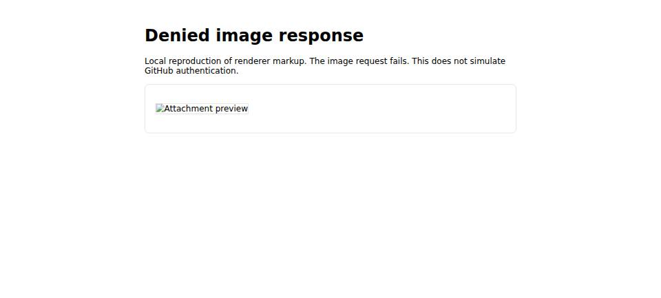

#4510 · Image request failures in GitHub PR Markdown
Verdict: PARTIALLY REPRODUCED · Root-cause confidence: medium
1. TL;DR
The built-in GitHub plugin passes an image URL from PR Markdown directly to a browser image element. When that request fails, the element remains broken and the view offers no working link. A focused regression test fails this way on trusted main in two clean checkouts. The report did not exercise a private GitHub attachment, so the claimed authentication redirect and signed-URL behavior remain unverified.
2. Claims vs findings
| Reported claim | Status | Evidence |
|---|---|---|
| PR Markdown image URLs become browser image elements. | Verified | The renderer and the failing DOM test both show the original URL in src. |
| A failed image leaves no usable fallback in the PR view. | Verified | The focused test dispatches an image error and finds no link; a local browser capture shows the broken-image appearance. |
| Private GitHub attachments fail because a raw URL lacks authentication. | Unverified | No private PR attachment was accessed. The local test deliberately uses a denied image request and does not model GitHub auth. |
| GitHub supplies a signed replacement URL in its own rendered page. | Unverified | No live private GitHub rendered HTML was inspected. |
3. Environment
- Repository: public
get-bb/bb, trustedorigin/mainatea49535e06e83a0df0b11b56b8280cc2e1f5addd. - Linux 7.2.5-3-omarchy x86_64; Node v26.8.1; pnpm frozen install and full Turbo build completed.
- Vitest DOM test in
bb-plugin-github. No BB server, private GitHub account, dev data directory, or provider process was used. The visual example used a local browser data page with an intentionally missing image.
4. Minimal reproduction
- Check out the base commit, install, and build:
git checkout ea49535e06e83a0df0b11b56b8280cc2e1f5addd pnpm install --frozen-lockfile --prefer-offline pnpm exec turbo run build
- Apply the focused test patch from the repository root. The complete test file is also saved here. Run:
git apply markdown-lite-test.diff pnpm exec turbo run test --filter=bb-plugin-github -- components/markdown-lite.test.tsx -t 'offers an image link'
Use the linked patch's downloaded path for
git apply. - Observe the failure. Expected: after an image error, a link named “Attachment preview” points to the image URL. Actual:
Unable to find an accessible element with the role "link" and name "Attachment preview" DOM contains: <img alt="Attachment preview" loading="lazy" src="https://example.invalid/attachment.png" /> Test Files 1 failed (1) Tests 1 failed | 3 skipped (4)
The key assertion in the new test is:
const image = slot.container.querySelector("img");
expect(image).not.toBeNull();
image?.dispatchEvent(new Event("error"));
expect(slot.getByRole("link", { name: "Attachment preview" }).getAttribute("href"))
.toBe("https://example.invalid/attachment.png");

A local HTML fixture records the visual example's structure. The browser capture used the equivalent markup in a data page because the automation browser could not reach the temporary local server.
5. Root cause
getPull requests the raw body field from gh pr view. It then passes that body and comment bodies through its RPC result without image-specific transformation at lines 1375–1414. The PR page renders the body with Markdown.
The Markdown renderer's renderImage copies any HTTP(S) URL into <img src>. It has no image error handler or fallback link. Consequently, any inaccessible image remains broken. The test proves this consequence. Whether private GitHub attachment URLs are inaccessible through this route requires a separate live private-repository check.
6. Proposed fix
First determine the authenticated URL behavior using a controlled private PR and compare the raw Markdown URL with GitHub's rendered body. If the request truly requires credentials, design a server-owned image delivery or URL transformation path that preserves repository access controls, expiry behavior, and safe URL handling. Add a UI error fallback so failed images remain discoverable. The authenticated delivery path crosses a security boundary and needs an explicit design and test plan; the fallback alone would not make screenshots load.
7. Related issues
No linked pull request or directly overlapping issue was found in GitHub metadata at report time.
8. Verification
The same agent created a second temporary detached checkout at ea49535e06e83a0df0b11b56b8280cc2e1f5addd, ran the frozen install and full build, copied only the focused test change, and reran the focused Turbo test. It failed at the same missing-link assertion: one failed test and three skipped. No report claim was upgraded from unverified to verified after this run. The second checkout did not use a private GitHub attachment.
9. Appendix
Commands used: git fetch origin main; pnpm install --frozen-lockfile --prefer-offline; pnpm exec turbo run build; pnpm exec turbo run test --filter=bb-plugin-github -- components/markdown-lite.test.tsx -t 'offers an image link'; then the same install, build, and focused test in the second checkout. The full build completed 60 of 60 tasks in each checkout. The browser example was captured with BB Browser Automation from a local data page; no external attachment URL was opened.
Issue descriptions and attachments were treated as untrusted claims. No issue-provided command, URL, branch, patch, or code was run.